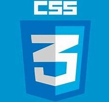
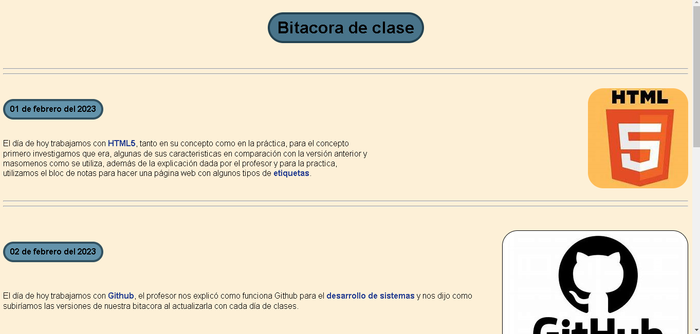

Bitacora de clase
01 de febrero del 2023

El día de hoy trabajamos con HTML5, tanto en su concepto como en la práctica, para el
concepto
primero investigamos que era, algunas de sus caracteristicas en comparación con la versión
anterior y
masomenos como se utiliza, además de la explicación dada por el profesor y para la
practica,
utilizamos el bloc de notas para hacer una página web con algunos tipos de etiquetas.
02 de febrero del 2023
El día de hoy trabajamos con Github, el profesor nos explicó como funciona Github para el desarrollo
de sistemas y nos dijo como
subiríamos las versiones de nuestra bitacora al actualizarla con cada día de clases.
Quedó pendiente agregarnos al Github del profesor para subir nuestros trabajos,
ya que solo pudimos trabajar con el github personal, y estamos en espera de
las instrucciones.
08 de febrero del 2023

El día de hoy al tener en cuenta que el internet no funcionaba de la mejor manera y después no funcionara en lo
absoluto,
el profesor optó por darnos clase en el pizarrón, nos habló sobre las "divisiones" en las páginas web y como es que estan
disponibles aun que no nos demos cuenta, además de que nos comentó algunas cosas sobre CSS el cual nos servirá
para darle un mejor aspecto
a nuestra página web.
Después de darnos la información, el profesor nos indicó que trataramos
de darle una buena presentación a nuestra página sin usar CSS y
utilizando solamente HTML, con lo cual estamos
trabajando actualmente.
09 de febrero del 2023

El día de hoy tuvimos una clase mas amplia sobre CSS e hicimos algunas practicas utilizando
nuestra bitacora como base en HTML
y al final comenzamos a trabajar bien sobre la bitacora con
CSS para darle una mejor forma y es el trabajo en el cual trabajamos
actualmente.
13 de febrero del 2023

El día de hoy continuamos trabajando con la bitacora y el diseño de ella, a demas de que
se nos habló sobre el diseñoy como
podemos saturar al usuario al mostrar tanto contenido
o contenido mal organizado, además de colores que no son llamativos.